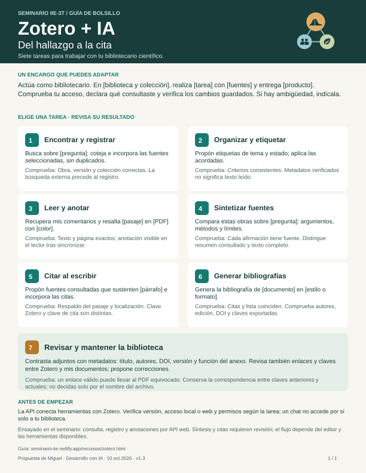

Zotero y tu bibliografía
Una referencia debe poder recuperarse y revisarse. Usaremos Zotero para registrar la bibliografía y aprenderemos a consultarla con ayuda de una API: una interfaz por la que un programa solicita información a otro. El asistente puede ayudarte a recuperar datos; tú revisas qué fuente respalda cada afirmación.
Esta es la segunda parte de Preparar tu proyecto. Reserva 15–20 minutos adicionales si ya tienes Zotero; la instalación o la resolución de problemas puede requerir acompañamiento. Puedes conservar la base agéntica que elegiste.
1. Organiza una primera referencia
Instala o abre Zotero de escritorio. Crea una colección con el nombre de tu proyecto, o identifica una existente. Una colección reúne referencias de una biblioteca; no equivale a una carpeta de archivos de tu proyecto.
Elige una fuente que ya estés usando en tu pregunta. Busca primero si existe en tu biblioteca; si no, agrégala desde su DOI, su página editorial o mediante captura manual. Revisa título, autores, año y DOI o URL contra la fuente. No necesitas reunir todavía toda la bibliografía ni adjuntar el PDF.
En la definición de tu proyecto anota el nombre de la colección y si revisaste solo los metadatos, el resumen o el texto completo. Agrega una frase: «Esta fuente me sirve para…». Si aún no elegiste una fuente, déjala como pendiente; no pidas al asistente que invente una referencia.
2. Prepara la conexión local
En Zotero, abre Ajustes → Avanzado y habilita la comunicación con otras aplicaciones del equipo. Mantén Zotero abierto. La API local atiende en http://localhost:23119/api/; sus lecturas no requieren clave. Evita exponer ese puerto fuera del equipo. Documentación oficial.
Esa dirección es para consultas desde programas o herramientas del asistente, no para abrirla como una página web. Zotero puede cerrar las solicitudes de un navegador y mostrar ERR_EMPTY_RESPONSE, aunque la API funcione correctamente. Comprueba la conexión con el encargo del paso 3; para ver tus referencias, usa Zotero de escritorio o tu biblioteca en zotero.org.
Tu asistente necesita una herramienta capaz de hacer solicitudes locales desde el mismo equipo. Un chat en la nube no obtiene ese acceso por adjuntar documentos. Si tu entorno no lo permite, realiza ahora la revisión en Zotero y deja la prueba de API para el acompañamiento. No necesitas configurar la API web ni compartir credenciales para esta actividad.
3. Consulta y compara
Copia y adapta este encargo:
Quiero comprobar el acceso de lectura a Zotero para mi proyecto.
Primero verifica la conexión local e informa la versión que responde.
Mi biblioteca es [personal o nombre e ID del grupo].
Mi colección se llama [nombre]. Identifícala sin elegir automáticamente
si hay varias coincidencias. Busca dentro de ella [título o DOI].
Devuelve título, autores, fecha, DOI o URL y clave Zotero del ítem.
No crees ni modifiques registros ni recuperes adjuntos o texto completo.
Si no tienes acceso local, explica qué falta; no simules la consulta.
Ayúdame a comparar el resultado con la ficha que veo en Zotero y registra
la prueba, su resultado y el siguiente paso en mis documentos.Comprueba que se trata de la misma obra y versión. Si la búsqueda no devuelve nada, revisa colección y términos; el resultado no demuestra que la obra no exista.
Una solicitud GET pide información. Por ejemplo, /api/users/0/collections lista colecciones de la biblioteca personal local. En la copia del proyecto, scripts/zotero_bibliografia.py permite comprobar conexión, buscar en una colección y exportar ítems seleccionados a BibTeX. Las instrucciones están en bibliografia/README.md; la coordinación puede facilitar esta práctica cuando ya uses Python.
La clave Zotero identifica un registro dentro de una biblioteca. La clave BibTeX identifica una cita en el archivo exportado: no son intercambiables. Al exportar, comprueba qué clave usarás en tu documento.
Qué queda listo
- Una colección identificada y una referencia con metadatos cotejados, o la dificultad concreta pendiente.
- Una breve explicación de para qué usarás esa fuente y qué parte consultaste.
- Una comparación entre la ficha y la respuesta real de la API, o el registro de por qué no pudo ejecutarse.
Pregunta de comprobación: si el asistente recuperó autores y título, ¿ya puede afirmar que leyó el artículo? Respuesta esperada: no; consultó metadatos. Cualquier interpretación del contenido debe apoyarse en el texto efectivamente leído.
Después aprenderemos a exportar referencias seleccionadas y citar con ellas. El catálogo del equipo se llevará en una biblioteca de grupo compartida. La coordinación facilitará el acceso cuando esté configurada; mientras tanto puedes practicar en tu colección personal. Las copias de una referencia en bibliotecas distintas no se actualizan como un único registro: revisaremos los metadatos en la biblioteca que use cada trabajo. Véase la guía de grupos de Zotero. Las dificultades de conexión no impiden participar en la apertura.
Ficha de consulta: Zotero + IA
¿Qué puedes pedirle al bibliotecario científico y cómo reconocer que la tarea quedó bien? Esta ficha de una página reúne siete casos de uso. Úsala cuando quieras ampliar la primera consulta de esta guía: elige una tarea, completa los campos del encargo y revisa la comprobación sugerida. No necesitas realizar todos los casos para participar en el seminario.
Descargar la ficha en PDF (carta, una página) · Abrir la imagen SVG ampliable


- Encontrar y registrar: buscar fuentes y comprobar obra, versión y colección antes de incorporarlas.
- Organizar y etiquetar: aplicar criterios acordados; verificar metadatos no equivale a leer el texto.
- Leer y anotar: recuperar comentarios y marcar pasajes; comprobar texto, página y resultado en el lector.
- Sintetizar fuentes: comparar argumentos, métodos y límites, indicando qué partes se consultaron.
- Citar al escribir: vincular afirmaciones con fuentes y localizaciones que realmente las respalden.
- Generar bibliografías: cotejar la lista con las citas del documento y el formato solicitado.
- Revisar y mantener la biblioteca: contrastar adjuntos con metadatos y comprobar enlaces, versiones y claves de cita.
Encargo adaptable: «Actúa como bibliotecario. En [biblioteca y colección], realiza [tarea] con [fuentes] y entrega [producto]. Comprueba tu acceso, declara qué consultaste y verifica los cambios guardados. Si hay ambigüedad, indícala».
La ficha orienta el trabajo; la ejecución depende del acceso, los permisos y las herramientas disponibles. En el seminario se ensayaron consultas, incorporación de referencias y anotaciones mediante la API web. No se presenta cada caso como un flujo automático ya validado. Contrasta las interpretaciones con las fuentes y verifica los cambios en Zotero o en tu documento.
Fuentes de apoyo: API local, API web, lector PDF y notas e integración con editores. La ficha es material del seminario, no documentación oficial de Zotero.
Propuesta de Miguel, desarrollada con asistencia de IA. Versión de trabajo: 10 de octubre de 2026; incluye la ficha de consulta v1.3, imagen ampliable y PDF imprimible. Pendiente de prueba con participantes.